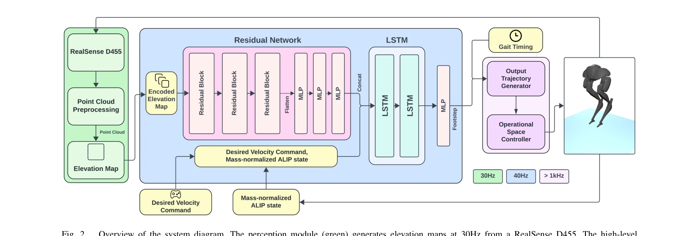
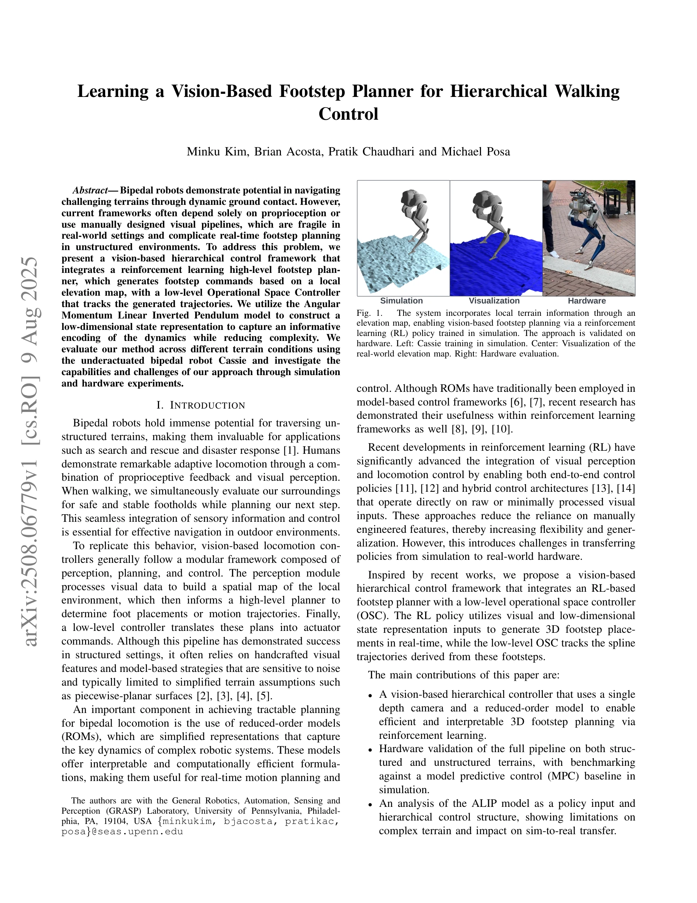

저자: Minku Kim, Brian Acosta, Pratik Chaudhari, Michael Posa | 날짜: 2025-08-09 | URL: https://arxiv.org/abs/2508.06779

Fig. 2.
본 논문은 단일 깊이 카메라와 reinforcement learning 기반의 계층적 제어 프레임워크를 통해 쌍족 로봇이 비정형 지형에서 실시간 발걸음 계획을 수행하도록 하는 시각 기반 발걸음 계획기를 제시한다. Angular Momentum Linear Inverted Pendulum 모델을 활용하여 저차원 상태 표현을 구성하고 상위 레벨의 RL 발걸음 계획기와 하위 레벨의 Operational Space Controller를 통합한다.

Fig. 1.
Fig. 2.
총평: 본 논문은 RL 기반 발걸음 계획을 ALIP 모델과 깊이 카메라 vision으로 통합한 실질적인 계층적 제어 프레임워크를 제시하며, 실제 로봇 하드웨어에서의 검증을 통해 실용성을 입증한다. 다만 ALIP 모델의 표현력 한계와 복잡한 지형에서의 성능 저하가 명확하게 드러나 향후 더 정교한 모델이나 end-to-end 학습 접근의 필요성을 시사한다.